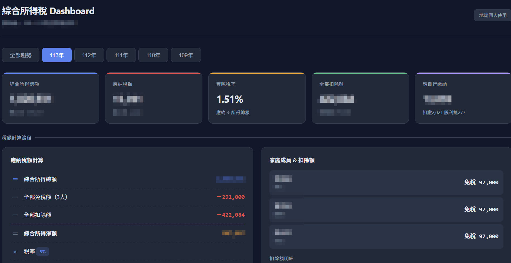

作品 · BI儀表板
綜合所得稅 Dashboard
2026.04 · 個人專案

FIG. 50 — 產品主畫面
關於這個作品
綜合所得稅 Dashboard 是一個僅供個人地端使用的資料整理工具，將多年度申報資料轉化為可切換的摘要與趨勢圖表。
介面可對照所得結構、扣除額與稅額計算流程，協助使用者以視覺化方式回顧個人稅務變化；作品頁不包含或連結任何個人申報資料。
作品亮點
多年度資料切換與趨勢比較
呈現所得、扣除額與稅額計算流程
以圖表檢視稅率與扣除額結構
僅供地端個人使用，不公開資料